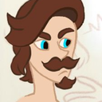
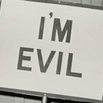

-  ███████
- CREATED Sat, 29 Mar 2014 17:47:00 -0400
-  ███████
- CREATED Tue, 31 May 2016 14:40:43 -0400
- ████████
- CREATED Sat, 28 Oct 2017 04:29:22 -0400
 █████████
█████████- CREATED Sat, 07 Sep 2019 02:48:54 -0400
posted by maj at @████████:
ok the fact that milva refers to angoulême as a "pup" when theyre on the mountain pass… can i get a wahoo
posted by maj at @████████:
side character squad rise up
posted by maj at @████████:
anyone think about how angouleme’s entire hansa of the other children that escaped from the orphanage died in horrible ways and she was the only one left
posted by maj at @████████:
[listens to the baptism of fire audiobook scene where regis sews dandelion’s head back together and all fear immediately leaves my body]
posted by maj at @████████:
does reading the end of lady of the lake count as emotional self-harm
posted by maj at @████████:
an ending much like when geralt and yennefer wake up in the apple orchard
the fallen members of the hansa waking up under four trees that grow in opposite directions; frozen in different stages of the seasons. milva awakes underneath the fiery reddish golden tree of autumn, cahir underneath the robust verdent tree of summer, angoulême underneath the wild blossoming tree of spring.
no one awakes underneath the tree of winter.
posted by maj at @████████:
cowardly male comic relief that constantly fucks up, is scared of mild situations, is excessively prideful despite these ‘shortcomings,’ needs saving, thus putting the other members of the cast in precarious situations, exists as a joke b/c men aren’t supposed to be scared of things or need rescuing, is the sidekick or a side character as to illustrate ‘how NOT to be’: [exists in a piece of media]
me: i’d die for you. i hope you know that. i’d lay down my life for you. i respect you immensely and you are a king
posted by maj at @████████:
██████████ replied to your post:
"me to the entire fandom, cdpr, and also even sapkowski: just say you…"
The hansa literally MADE those books imo, I love them all sm. Sad they get ignored.
they do make the last books lol, especially in baptism of fire when about 50-60% of the book is their scenes (and for a series that has a POV shift between three main characters, that’s a LOT). + angouleme’s addition in tower of the swallow was so refreshing imho because of the chapters beginning to get depressing… all ciri stuff was pretty depressing by this point and even the hansa was starting to get on each other’s nerves a bunch
the hansa’s erasure from many fans’ fond memories as well as CDPR’s rendition of the universe gets on my facking nerves and i dont get it bc they were emotional, they were funny, they had compelling backstories and endings. such strong characterization. lacked in development over the journey but that’s due to them being side characters.
most importantly, they echo the strongest themes of the witcher…….
- found family overcoming individual pain and loss
- play with expectations vs reality when it comes to morals (“the real humans are monsters/your real allies are your enemies/the real lovers are killers/the real innocent are the guilty”)
- really absolutely dark shit but just hilarious when needing to be
- redemption from yourself (think abt geralt’s character arc and how each of the hansa members also have some development in their story that demonstrates them ‘redeeming’ themselves from their past)
so when they get erased it’s erasing a really large part of the themes of the books and replacing it usually with an individualist narrative (like in blood and wine with regis LOL) or a heterosexual one, both of which are bad options
also i just enjoy the hansa b/c it’s a pseudo-familial dynamic, but one that is non-nuclear and doesn’t depend on any romantic relationship. the members are very different in background as well as stylistically from one another, no one is biologically related or could pass as being so, everyone has had a very difficult issue and no one is free of challenges in their life (miscarriage/addiction/being used by imperialism), plus the ‘kids’ of the group are a young adult and an older teenager, WHICH altogether makes the dynamic [if you read it as familial] something not often seen in media.
it’s so unique and refreshing to read in a sea of heterosexuality and emphasis on nuclear families… obviously i fucking love yennefer ciri and geralt as their destiny family but i think the nuclear family model can be triggering for a lot of people, including myself, who have had problems in it so the hansa is just fucking refreshing LOL………….. also the fact that the men in the company are safe and the women can kick ass and superbly hold themselves in a fight is very reassuring and comfortable to me personally
posted by maj at @████████:
regis is a fun character until you go from “haha funy vampire epically pwns geralt” to “self-reflective, responsible, and kind men only exist in fiction”
posted by maj at @████████:
unpopular opinion: people giving regis OC vampire children to take care of is influenced by
- the ‘undesirability’ of parenting teenagers and the ‘desirability’ of parenting children still in their ‘cute’ state (i.e., babies, young children)
- the fact that no one here read the tower of the swallow or lady of the lake did they
posted by maj at @████████:
the hansa is bizarre because although its comprised of gays almost all of its members know how to drive
geralt knows how to drive. just flat out. he will do the classic dad maneuver of positioning of his right arm behind the passenger seat when parallel parking
dandelion “knows” how to “drive” … sign a waiver before getting into a car with him behind the wheel. his nervousness is apparent and he yelps at every turn and stop.
milva knows how to drive and is good at it but road rage tends to take her over. you will hear so many swears you did not know existed
regis is a cautious driver because of his past of course. but every full moon he races down an empty highway. cause its fun
cahir learned how to drive before he left for nilfgaardian service but in nilfgaard they drive on the right side of the road so in the north he is all kinds of fucked up when he tries to drive
angoulême doesn’t know how to drive but will lie and say she can so she can do donuts in a parking lot
posted by maj at @████████:
“this is my cool uncle and he literally can’t die” VERY good sentiment, actually
the concept of children feeling “abandoned” by their parents because they died is pretty common. and angoulême lost her entire previous hansa/bandit group of others from the orphanage so she’s no stranger to loved ones dying and her being left alone . thus i present you with the conclusion that angoulême’s issues with parental abandonment are compounded with fear that whoever stands up for her will eventually die and leave her all alone and defenseless, again.